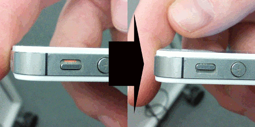

Hello, welcome to )))Fields(((. To ensure a full experience, here are a few instructions.
1. put the volume of the device to maximum.
2. make sure your phone is not on mute.

3. if your device go to sleep mode, wake it up.
4. if your device seems to be stuck, reload the page and reconnect.
5. when you're ready, press the start button below.